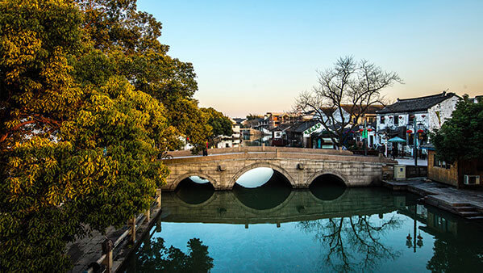
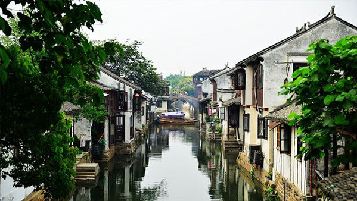
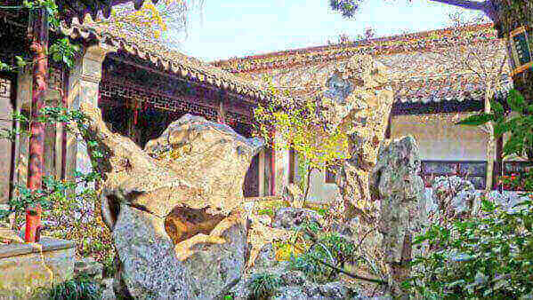

morly旅游圈
苏州，古称吴，简称为苏，又称姑苏、平江等，是国家历史文化名城和风景旅游城市，国家高新技术产业基地，长江三角洲城市群重要的中心城市之一、G60科创走廊中心城市、江苏长江经济带的重要组成部分，有“人间天堂”的美誉。苏州位于江苏省东南部，长江三角洲中部，东临上海，南接嘉兴，西抱太湖，北依长江。苏州属亚热带季风海洋性气候，四季分明，雨量充沛，种植水稻、小麦、油菜，出产棉花、蚕桑、林果，特产有碧螺春茶叶、长江刀鱼、太湖银鱼、阳澄湖大闸蟹等。苏州是中国首批24座国家历史文化名城之一，有近2500年历史，是吴文化的发祥地，为清代“天下四聚”之一。苏州人多属江浙民系，使用吴语。苏州园林是中国私家园林的代表，被联合国教科文组织列为世界文化遗产。中国大运河苏州段入选世界遗产名录。
姑苏城，诗意的名字勾起淡淡的古镇情怀。爱上这座城，也许不再是因为她的园林众多，爱上这座城，也许不再是因为她的小桥流水，爱上这座城，也许不再是因为她的吴侬软语。你可以登虎丘，倾听苏州历史的声音，陪苏州城一起，天荒地老。你可以骑自行车，从苏州300座古桥上飞过，甩出一身痛快淋漓的汗水。你可以在晚上做客三山岛，仰望星空，夏日的夜晚周边还有萤火虫雀跃。你可以在最天使书城诚品书店里，点上一杯清茶，从书本中寻找灵魂的栖息地。你可以在大街小巷纵横的平江路上，走进猫空，写上一张明信片，寄给未来的自己。
了解苏州，与我一起走进这画卷般的烟雨姑苏城。
两日游玩攻略
路线推荐:
拙政园(2小时) → 苏州博物馆(2小时) → 平江路(1小时) → 金鸡湖(2小时)；拙政园
拙政园位于苏州城娄门东北街178号，以园林的分割和布局异常巧妙，充分采用了借景和对景等造园艺术而著称，是苏州宋、元、明、清四大园林之中的明代古典园林。园子分为东、中、西三部分，每个部分都有不同的风采，推荐游玩顺序东部、中部、西部。
【交通】：
乘坐40、313路公交车在北园路站下车或乘坐55、178、202、262、309、518、529、811、923、 游1、游2、游5路公交列车在苏州博物馆站下车，然后步行即可到达。
【门票】:
普通票:70人民币 (11月1日-次年3月31日,6月1日-6月30日 周一-周日)
普通票:90人民币 (4月1日-5月31日,7月1日-10月31日 周一-周日)
【开放时间】:
07:30-17:30 (3月1日-11月15日 周一-周日)
07:30-17:00 (11月16日-次年2月28日 周一-周日)
苏州博物馆
传统的苏州园林风格，高低错落，深灰色屋面与白墙相衬，整个博物馆宛若一座小园林。
由新馆和忠王府(旧馆)两部分组成，新馆内可看到远古到近代的陶器、玉器、书画等文物；忠王府内，能看到秀丽典雅的苏式彩绘。馆内设有吴地遗珍、吴塔国宝、吴中风雅、吴门书画四个富有苏州特色的常设展览。此外还有民俗展览供游客了解苏州一带风俗习惯，还可以参观太平天国时古建筑，感受当时场景。
【交通】：
乘游1、游2、游5、55、178、202、309、313、518、529、923路等公交车在苏州博物馆站下车。
【门票】:
大成殿:30人民币；联票(大成殿、王谢古居):32人民币 (1月1日-12月31日 周一-周日)
【开放时间】:
09:00-17:00；停止入场时间:16:00 (1月1日-12月31日 周二-周日)
【tips:】
周一闭馆(国家法定节假日除外) ，本馆遇有重大活动或重要设备设施维修保养时，可根据需要临时闭馆，届时将告示公众。
平江路
平江路是苏州的一条历史老街，沿着石板路和河道的流向，穿梭在小桥流水之间。当然，跟很多商业化的古街一样，平江路上也开满了各种杂货铺咖啡厅，但还是以苏式特色的服装和扇子居多，喜欢苏式团扇子的朋友不要错过了～
【交通】：
地铁：1号线相门站或临顿路站下，步行约300米可到平江路的南端
【门票】:
免费
【开放时间】:
全天
平江路
如果姑苏是苏州的历史,金鸡湖就是苏州的现在和未来。城市的亮化工程一流。湖边可见建筑灯光，有目的的设计，自然比其他杂乱的万家灯火要规整的多。曾经各种赛事，活动聚集在此。又添了几份国际大都市之感。
【交通】：
乘坐108、120东环、120西环、138、 156、219、258、 苏州园区二号专科文中心站，地铁一号线苏州文化博览中心站
【门票】:
免费
【开放时间】:
06:00-次日00:00 (1月1日-12月31日 周一-周日)
苏州，古称吴，简称为苏，又称姑苏、平江等，是国家历史文化名城和风景旅游城市，国家高新技术产业基地，长江三角洲城市群重要的中心城市之一、G60科创走廊中心城市、江苏长江经济带的重要组成部分，有“人间天堂”的美誉。苏州还是中国首批24座国家历史文化名城之一，有近2500年历史，是吴文化的发祥地，为清代“天下四聚”之一。苏州园林更是中国私家园林的代表，被联合国教科文组织列为世界文化遗产。中国大运河苏州段也入选世界遗产名录。
苏州景色秀丽，素来以山水秀丽、园林典雅而闻名天下，有“江南园林甲天下，苏州园林甲江南”的美称，又因苏州有着小桥流水人家的水乡古城特色，有“东方水都”之称。由此可见，苏州是一个多么美丽的城市。你不想去苏州看看那些宛如天堂的美景吗？
苏州有许多好玩又好看的景点，其中苏州园林最为出色。苏州园林甲天下，为中国十大名胜古迹之一，其中九座园林被列入世界文化遗产名录。由此可知，苏州的园林是多么的美丽。在苏州园林中，拙政园和留园列入中国四大名园，去了苏州，可一定要去这两个林园看看哦。拙政园位于位于苏州城东北隅（东北街178号），是苏州存在的最大的古典园林，全园以水为中心，山水萦绕，厅榭精美，花木繁茂，具有浓郁的江南水乡特色，园林以水见长，庭院错落，花木为胜。园内景点众多，景色优美，我相信，只要你进了园内，看到那些各有特点的美丽景色，绝对不会后悔自己来此一趟。除了拙政园，留园也是一个十分值得一去的景区。留园位于苏州阊门外留园路338号，以园内建筑布置精巧、奇石众多而知名，与苏州拙政园、北京颐和园、承德避暑山庄并称中国四大名园。园以建筑艺术精湛著称，厅堂宏敞华丽，庭院富有变化，太湖石以冠云峰为最，有“不出城郭而获山林之趣”。园内景点众多，有绿荫、恰杭、可亭、西楼、花房、冠云峰等。苏州也有许多具有古代历史文化气息的古镇，大家也可以去看看，去感受下古镇的韵味。走在古镇的街边，看着古老的建筑，仿若穿越了时空，自己正走在古代的街上。我比较喜欢的两个古镇是周庄古镇和同里古镇，大家有空来苏州的时候，可以去逛逛这两个古镇。
去苏州游玩的话，当然也不能少了当地的美食和特色名点了。苏州有许多美食，例如太湖梅鲚、太湖白虾、采芝斋糖果、松鼠桂鱼、阳澄湖大闸蟹、叫化鸡等。苏州也有许多特产，例如苏绣、宋锦、碧螺春、桃花坞木板年画等，其中又以苏绣和碧螺春最为有名，你不想去见识一下，苏绣的美丽吗？不想去品尝一下，碧螺春的清香幽雅吗？
有这么多美景和美食都在等着你的到来，你不想去苏州看看吗？
苏州拙政园景区门票信息：
淡季票价：50元/人（10.31-4.15）、旺季票价：70元/人（4.16-10.30）
公交路线
汽车北站出站口乘坐529或55或5路到达苏州博物馆（拙政园、狮子林），向东步行约500米到拙政园。
汽车南站出站口乘坐529或55或811路到达苏州博物馆（拙政园、狮子林），向东步行约500米到拙政园。
内容整理至网络，如有侵权，请联系我们！1255394075@qq.com
 